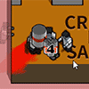
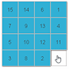
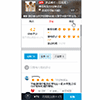
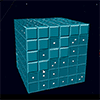

Toggle navigation
Linx Blog
Home
About
Tags
Linx Blog
写写代码，做做设计

模块化制作双人射击游戏
Canvas+Js+Ps
看周围的朋友，经常在业余时间搞自己的小作品，小游戏。感觉自己也不能落伍，再加上大飞哥模块化开发会飞的小鸟的影响。我决定自己也来做个游戏，并且用到了大飞哥模块化开发的思路...
Posted by Linx on July 12, 2017

VUE补漏：transition
vue中列表过渡练习demo
在vue官网上看了列表过度这个功能，觉得挺有趣的，所以敲了几个demo练习下
Posted by Linx on July 12, 2017
Web开发者学习路线图
前端开发、后端开发、运维开发
Web开发者学习路线图，帮助自己明确学习的目标
Posted by Linx on July 12, 2017

vue 2.0 外卖App练习demo
vue2+vuex+vue-router+webpack+ES6
vue2+vuex+vue-router+webpack+ES6
Posted by Linx on July 12, 2017
keypress事件无法使用方向键的解决办法
keydown、keypress、keyup之间的区别
keypress事件不能对系统功能键进行正常的响应
Posted by Linx on July 12, 2017
webpack使用文档
webpack简单的使用记录
webpack是一个资源的打包工具，目前最新为webpack3，可以将 .js, .css , image等静态资源当做一个模块来进行打包，那么每一种模块都是有一个对应的 loader来实现......
Posted by Linx on July 12, 2017
JQ笔记总结
简单的jq笔记，方便日后的查找和复习
Posted by Linx on July 12, 2017

3D扫雷游戏
CSS3+js+ps制作3D扫雷小游戏
一直觉得做游戏可以很好的巩固之前所学的知识，虽然耗时点。但是做完之后还是有满满的成就感，特别是对于一个刚出门不久的人。
Posted by Linx on July 12, 2017
MORE+
FEATURED TAGS
前端开发
插件整理
小游戏
交互设计
ABOUT ME
写写代码，做做设计
FRIENDS
awesomes
JavaScript MDN
JavaScript MDN
Vue组件-轮子工厂
Jquery插件库